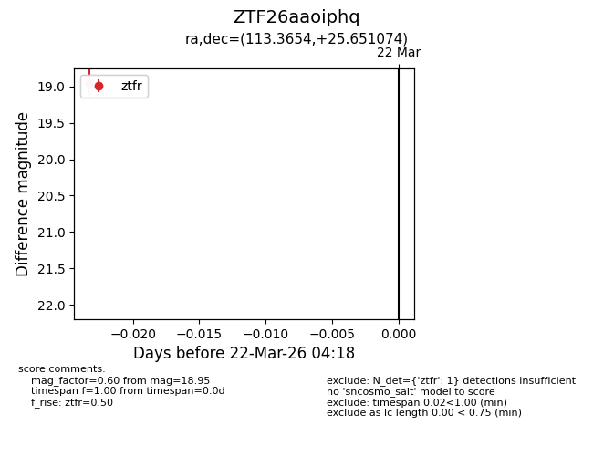
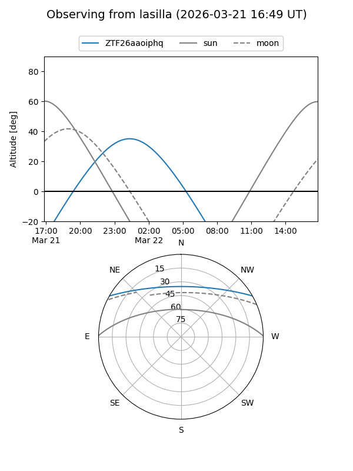
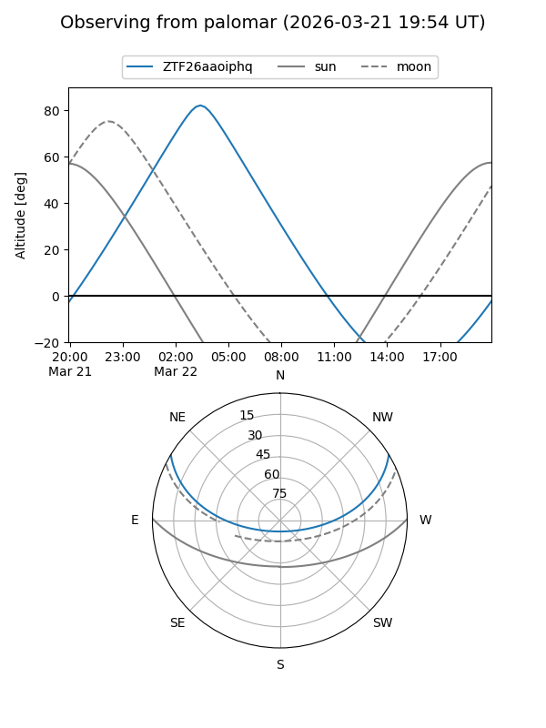

ZTF26aaoiphq
Target ZTF26aaoiphq at 2026-03-22 04:20
Aliases and brokers:
FINK: link
Lasair: link
ALeRCE: link
alt names
ZTF26aaoiphq (ztf,fink_ztf)
Coordinates:
equatorial (ra, dec) = 113.3654,+25.65107
equatorial (HMS+DMS) = 07:33:27.70,+25:39:03.87
galactic (l, b) = (193.6361,+20.10098)
Flags:
Photometry:
last ztfr=18.95
1 ztfr detections
Lightcurve

Visibility


Additional plots